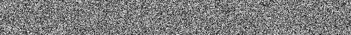

Animated Text-Based Captcha#
Contents#
Contents:
Summary#
Important
This is NOT a real captcha, as there’s no any evidence can prove the effectiveness of this project.

Animated Text-Based Captcha let you create the captchas just like the one shown above.
Requirements#
System#
python >= 3.10.10
Python#
Pillow >= 9.5.0
Setup#
Installation#
Install with Python pip
>>> pip install ATBCaptcha-0.3.0.dev0-py3-none-any.whl
Build Docker Image
>>> mkdir tmp
>>> pip install ATBCaptcha-0.3.0.dev0-py3-none-any.whl -t tmp
>>> docker build -t atbcaptcha:0.3.0-dev tmp/atbcaptcha
Usage#
Start Up#
Import this Project as a module.
'''
For more information, see `docs/`.
'''
from atbcaptcha import ATBCaptcha, Font, Color
# Create an ATBCaptcha object
img = ATBCaptcha(
text='Text to display',
font=Font.HACK_NERD_FONT,
size=72,
)
# Generate the captcha
img.generate(
fps=30,
color=Color.DEFAULT,
)
# Output the captcha
img.save('./output.gif')
Use Python to execute this project.
>>> python -m atbcaptcha -h
>>> python -m atbcaptcha foo -o ./output.gif
>>> python -m atbcaptcha bar -o ./output.gif --size 72
>>> python -m atbcaptcha foobar -o ./output.gif --size 72 --fps 30
Use Docker to execute this project.
>>> docker run -it --rm -v "`pwd`:/usr/src/output" atbcaptcha:0.3.0-dev bar -o ./output/test.gif --size 72
Arguments#
Requirement#
text: The text to display on captcha.
–output: The path of where the captcha to be saved.
Optional#
–font: Path of a TrueType font, HackNerdFont will be use as default if not specified.
–size: Size of the font, in pixels. (Default = 12)
–color: Color of the captcha, currently only default in supported.
–fps: The fps of captcha. (Default = 15)
Run the tests#
Unit tests
>>> python -m tests
Support#
Maintainer#
yveschen2718@gmail.com